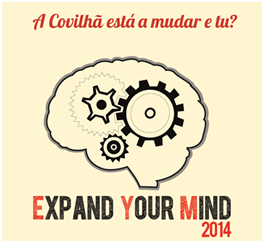

Expand Your Mind faz renascer a Garagem de São João
Entre pinturas, instalações artísticas, desfiles de moda e muito mais, a Garagem de São João foi invadida durante três dias por um mundo de arte onde “Expandir a nossa mente” foi a palavra de ordem.
De 1 a 3 de Maio, a Garagem de São João, outrora “abandonada”, ganhou vida e recebeu aquela que foi a segunda edição do Expand Your Mind. Um movimento artístico que visa dar a conhecer as várias formas de fazer arte, ocupando espaços devolutos da cidade.
Bruno Cunha, estudante de Design de Moda da Universidade da Beira Interior, foi o principal responsável pela realização deste evento, que levou até àquele espaço cerca de 1500 pessoas durante os três dias de exposição. Vários estudantes da UBI, de escolas secundárias da Covilhã e até artistas internacionais, puderam ver os seus trabalhos expostos e admirados pelas centenas de visitantes que exploraram o local.
Julio Pablo Droguetti, estudante da Escola Secundária Campos Melo, foi um dos artistas que viu o seu trabalho e da sua turma exposto e reconhecido neste evento. “É muito bom e reconfortante ver que todo o esforço no final valeu a pena. Foi das coisas que mais prazer me deu fazer até hoje. Todas as horas de sono perdido, todos os nervos e toda a ansiedade compensaram e sinto-me muito feliz", referiu o mesmo.
Desfiles de moda foram também uma constante durante estes dias e as peças feitas pelos alunos ganharam outra vida no corpo das “manequins” convidadas para desfilar. Peças extravagantes e trabalhadas, puderam dinamizar o potencial artístico dos alunos que fizeram parte do “Expand Your Mind”. “É interessante e diferente ver uma coisa destas ser feita na Covilhã. Quando vemos o desfile parece que nos sentimos como quando vemos aqueles que passam na televisão, mas agora mesmo à frente dos nossos olhos. São peças diferentes e é bastante engraçado ver o trabalho que é desenvolvido pelos alunos da UBI", referiu Maria Medina, uma das pessoas que visitou a Garagem no dia 1 de Maio.
“O facto de a noite acabar com atuações ao vivo e espetáculos diferentes do habitual é quase a cereja em cima do bolo. Dá para descontrair, conhecer novos talentos e passar um bom bocado com os amigos”, afirmou Joel Barros, aluno do curso de design de multimédia da Universidade da Beira Interior.
No final dos três dias de duração do evento o balanço foi positivo para uns e não tanto para outros. “Pensei que teria mais afluência por parte da comunidade covilhanense e até da comunidade ubiana, o número de pessoas ficou um pouco aquém das minhas expectativas, mas mesmo assim não posso dizer que tenha corrido mal. Ouvimos muitos elogios, vimos muita gente interessada e isso é de facto o mais importante”, referiu um dos organizadores do evento.
De salientar fica o facto de o evento se ter demonstrado capaz de cativar o público presente e tê-lo feito participar ativamente nas atividades propostas pela organização e de transportar a sua mente para territórios diferentes daqueles a que está habituado no seu quotidiano.
publicado em: quarta-feira, 14 de Maio de 2014